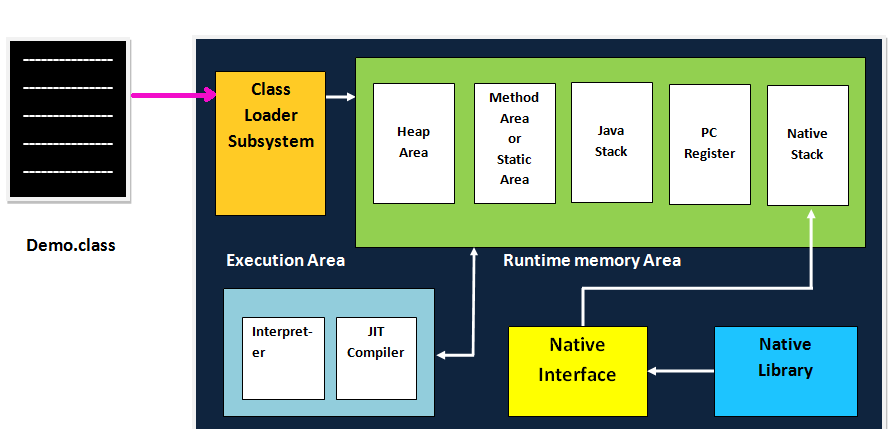

Java virtual machine(JVM) is an engine that provides a Runtime Environment to Drive (execute) the java code or applications. it convert java bytecode into machine language. JVM is a part of the Java Runtime Environment (JRE). in other programming languages, the compiler produces machine code for a particular system. however, the java compiler produces code for a virtual machine known as java virtual
Java virtual machine (JVM) in JAVA contains classloader, Memory Area, Execution Engine, etc.
The class loader is a subsystem used for loading class file. It perform three major function loading, linking and initialtization
JVM method area stores class stuctures like metadata, the Constant Runtime pool and the code for methods.
All the objects, their realted instance varaible and arrays are stored in the heap area. this memory is common and shared across multiple threads
Java language Stacks store local varaible and it's partial result. each thread has it's own JVM stack and this created simultaneously as the thread is created.
PC Registers store the address of the java virtual machine instructions which is currently executing in java, each thread has it's separated PC Registers
Native method stack hold the instructions of native code depends on the native library. It is written in another programming language instead of java
It is a type of software used to test hardware, software or complete system. The test execution never carries any information about the tested product
The Native method interface is a programming framework. It allows java code which is running in a JVM to call by libraries and native applications
This libraries is a collection of the native libraries like (c, c++) which are need by the execution engine.
Let's understand the working of JVM on different processors and O.S step by step
The code to Display the addition of two numbers is system.out.println (1+2), and saved as a.java file
Then java compiler convert this source code to intermediat code called Bytecode. The output is a .class file
This code is not understood by any platform, but only a virtual platform called the java virtual machine is understood this.
This virtual machine reside in the RAM of your operating system. when the virtual machine is feed with this bytecode, it identifies the platform and it is working on Then convert the Bytecode into the native machine code